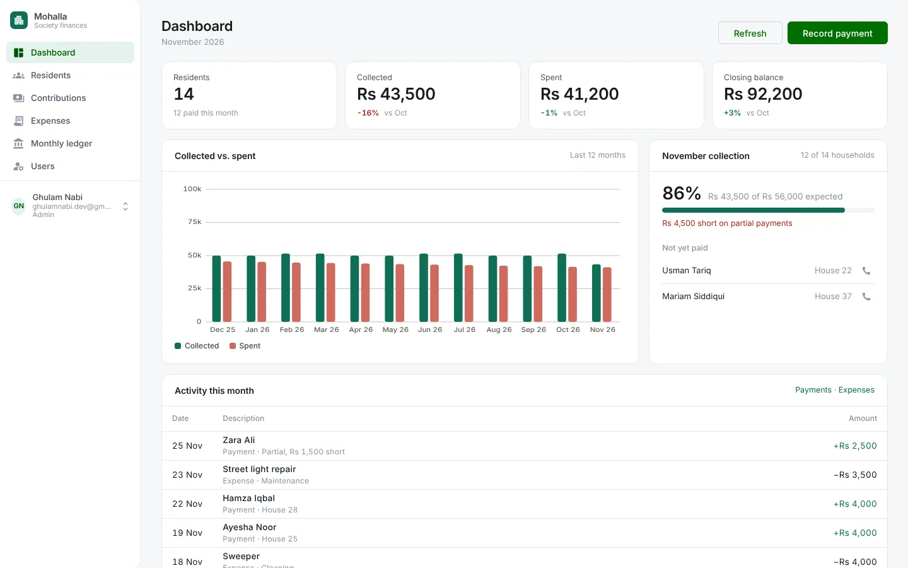
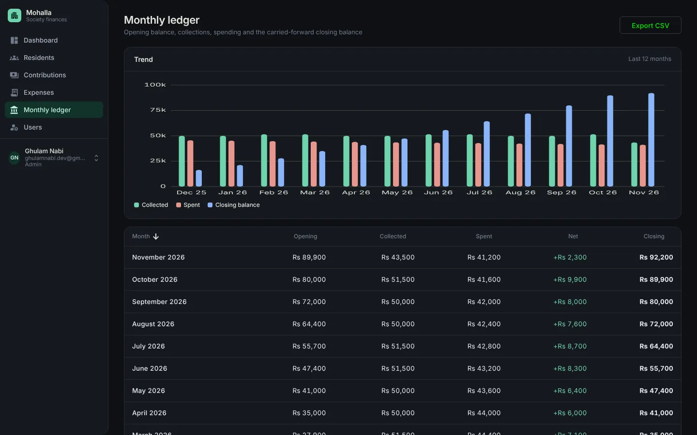

The brief
A mohalla is a neighbourhood. In many of them in Pakistan, each house pays a monthly amount for the guard, the cleaner and the street lights, and a volunteer treasurer keeps the accounts in a notebook or a spreadsheet. The two questions that cause arguments are always the same: who is short this month, and how much is left?
Mohalla answers both without anyone doing arithmetic. The treasurer records payments and expenses, and everything else, totals, statements and the month’s closing balance, is calculated.
What it does

- Residents, with each household’s statement: what was due, paid and short, month by month.
- Contributions and expenses, with categories, search and filters by month.
- A monthly ledger: opening balance, collected, spent and closing balance, with a 12-month trend.
- Two roles: admins record and manage, viewers see the same figures read-only.
Decisions
The ledger is generated, not typed
A scheduled job runs just after midnight on the 1st of every month and opens the new month. The service calculates its totals and carries the previous month’s closing balance into the new opening balance, across the year boundary too. A payment recorded for an earlier month creates that month’s row if it is missing, so back-dated entries can’t break the chain.

One rule for who can change things, enforced twice
The role travels in the sign-in token. On the server, every write requires the admin role and a viewer gets a 403. In the client, a single directive driven by the same claim hides every button that changes data, so viewers never see a control they can’t use. The first account becomes the admin, and admins promote or demote others.
Statements a household can follow
Each resident’s page lists the months with what was due, what was paid and any shortfall, with a running balance. It is the screen a treasurer can show a resident at the door to settle a disagreement.
Errors land on the field that caused them
The API returns standard problem details with an error per field, and the client maps each one onto the matching form control instead of showing a general message.
Tested at both ends
The API’s integration tests boot the application on in-memory SQLite with the scheduler switched off by configuration, and cover the rules that matter: the first account becomes admin, viewers can read but not write, payments roll into the next month, a back-dated payment creates its month, and the statement totals add up. The client has 94 unit specs, including the dashboard and statement arithmetic.
- Viewers_can_read_but_not_write
- Payments_and_expenses_update_the_month_and_roll_into_the_next
- A_back_dated_payment_creates_the_missing_ledger_row
- Resident_statement_totals_the_history
What I’d do differently
Mohalla records the current state of each payment but not who changed it and when. After building TechZone’s activity log, I would add the same audit trail here: in a society’s accounts, “who edited this?” matters as much as the number.
SQL Server makes it harder to host a free demo, so I would make the database provider switchable for deployment as well as for tests, and add browser tests for the main flows.